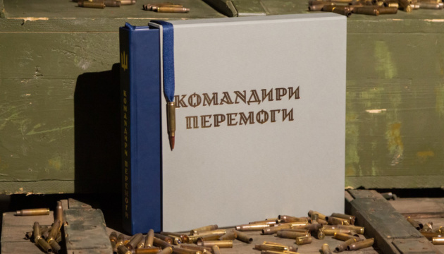
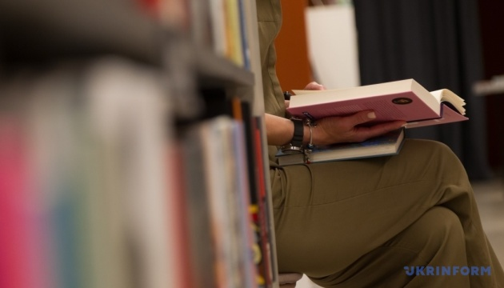

Вийшов перший художній твір про Нобелівського лауреата з України Агнона
Вийшов друком роман, де вперше в художній формі осмислюється постать єврейського письменника з Бучача на Тернопільщині, лауреата Нобелівської премії з літератури Шмуеля Йосефа Агнона.
Автор: Мудрий Антон

Укрінформ презентує книгу «Командири перемоги» на Форумі видавців у Львові
Національне інформаційне агентство «Укрінформ» 10 вересня презентує у Львові книгу «Командири перемоги», створену на основі однойменного мультимедійного журналістського проєкту агентства.
Автор: Мудрий Антон

Троє українських письменників-військових візьмуть участь у літературному проєкті в Ірландії
Українські письменники-військові та ветерани російсько-української війни Дмитро Крапивенко, Євген Шибалов і Аліна Сарнацька стануть учасниками українсько-ірландського літературного проєкту Bridging the Distance: Ukrainian and Irish Literary Voices.